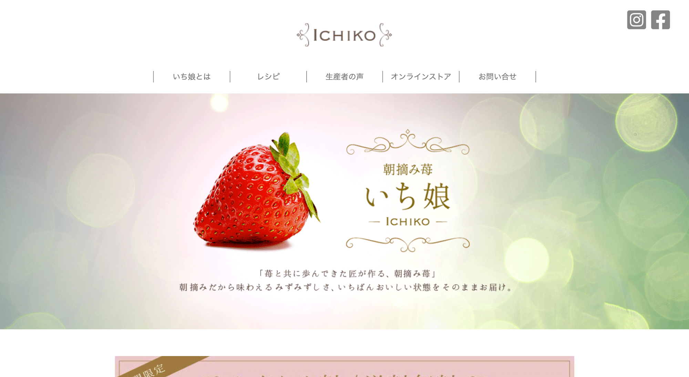

Web Page

朝摘み苺 いち娘
Adobe XD/HTML,CSS/Jquery/Photoshop
画像処理（自分の顔を加工して生産者のおじいさんの顔を作成）
ターゲットは30~40歳の独身女性。
都内に住みIT関係の仕事をしており、年収は500万~1000万円ほど稼いでいる設定
雑誌は「美的」や「MORE」、「美人百花」などを読んでいるため、可愛いものより綺麗なものを選ぶ。
イチゴの設定は12粒で5000円と品の高いブランドイチゴであるため、女子会などに持って行ってウケのいいイチゴをイメージ。
サイトに生産者本人の写真を載せることでイチゴへの信頼性を持たせました。
※仮想制作です。

ヒューマンアカデミー立川校（別館）リデザイン
Adobe XD/HTML,CSS
ターゲットは専門的な知識を必要とした仕事を目指す若者から壮年の男女をイメージ。その為、ベースカラーは優しさから爽やかさまで表現できるペールトーンを使用しました。
また、コース紹介の箇所はタブを色別にコースを分ける事で少ないスクロールで、調べたいコースにたどり着けるように工夫しました。
コースは4つあり、それぞれイメージに合ったカラーを設定しました。
- WEBデザイナー科
青:PCを使用するIT系をイメージする色。
スタイリッシュ感を表現しました
- CAD科
橙:建築など大地に関する設計も行う為
大地の茶色からトーンアップした色を使用しました
- 経理・総務事務科
緑:お金の管理などを行う為、
信頼性をイメージする色を使用しました
- 医療・調剤・OA科
桃:看護服に使用されている色。
温もりや優しさを表現しました
架空 パン屋Cocoro サイトデザイン
Adobe XD/HTML,CSS
サイトイメージはクラウドワークスより
ターゲット：20~60代 女性
シックな黒色に女性らしさを表現するために鮮やかな赤を使用しました。
同じ赤色で地図を色べたにし、華やかさをプラスしました。